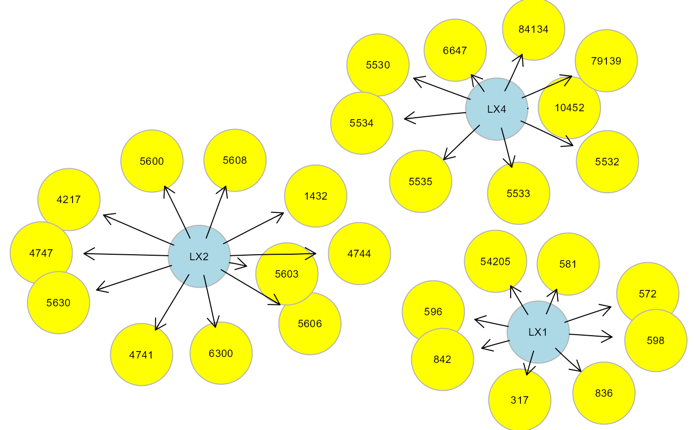

Topological graph clustering methods.
clusterGraph(graph, type = "wtc", HM = "none", size = 5, verbose = FALSE, ...)An igraph object.
Topological clustering methods. If type = "tahc",
network modules are generated using the tree agglomerative hierarchical
clustering method (Yu et al., 2015). Other non-tree clustering methods
from igraph package include: "wtc"
(default value; walktrap community structure with short random walks),
"ebc" (edge betweeness clustering), "fgc" (fast greedy method), "lbc"
(label propagation method), "lec" (leading eigenvector method), "loc"
(multi-level optimization), "opc" (optimal community structure), "sgc"
(spinglass statistical mechanics).
Hidden model type. Enables the visualization of the hidden
model, gHM. If set to "none" (default), no gHM igraph object is saved.
For each defined hidden module:
(i) if HM = "LV", a latent variable (LV) will be defined as
common unknown cause acting on cluster nodes; (ii) if HM = "CV",
cluster nodes will be considered as regressors of a latent composite
variable (CV); (iii) if HM = "UV", an unmeasured variable (UV)
is defined, where source nodes of the module (i.e., in-degree = 0)
act as common regressors influencing the other nodes via an unmeasured
variable (see also clusterScore).
Minimum number of nodes per module. By default, a minimum number of 5 nodes is required.
A logical value. If FALSE (default), the gHM igraph will not be plotted to screen, saving execution time (they will be returned in output anyway).
Currently ignored.
If HM is not "none" a list of 2 objects is returned:
"gHM", subgraph containing hidden modules as an igraph object;
"membership", cluster membership vector for each node.
If HM is "none", only the cluster membership vector is returned.
Fortunato S, Hric D. Community detection in networks: A user guide (2016). Phys Rep; 659: 1-44. <https://dx.doi.org/10.1016/j.physrep.2016.09.002>
Yu M, Hillebrand A, Tewarie P, Meier J, van Dijk B, Van Mieghem P, Stam CJ (2015). Hierarchical clustering in minimum spanning trees. Chaos 25(2): 023107. <https://doi.org/10.1063/1.4908014>
# Clustering ALS graph with WTC method and LV model
G <- properties(alsData$graph)[[1]]
#> Frequency distribution of graph components
#>
#> n.nodes n.graphs
#> 1 32 1
#>
#> Percent of vertices in the giant component: 100 %
#>
#> is.simple is.dag is.directed is.weighted
#> TRUE TRUE TRUE TRUE
#>
#> which.mutual.FALSE
#> 47
clv <- clusterGraph(graph = G, type = "wtc", HM = "LV")
#> modularity = 0.5588502
#>
#> Community sizes
#> 3 1 4 2
#> 4 8 9 11
#>
gplot(clv$gHM, l = "fdp")

table(clv$membership)
#>
#> 1 2 4
#> 8 11 9